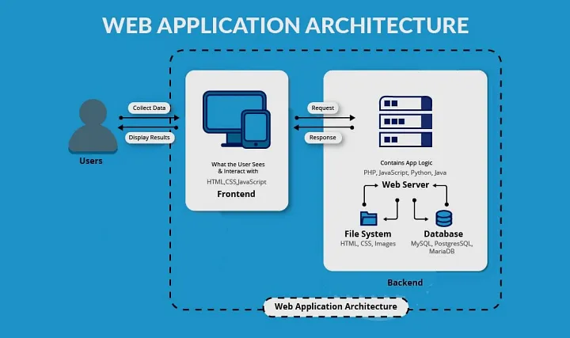

WEBSITE! how does it works?
Websites are like portals to a vast digital landscape, but ever wondered what actually happens behind the scenes when you click on that link? Let's pull back the curtain and unveil the magic!
Imagine a website as a delicious cake. You see the beautiful frosting and decorations on top (the website's design and content), but there's a whole lot going on behind the scenes to make it work (the website's technology and infrastructure). Your browser, the eager customer, sends a request to the web server, the bustling kitchen where the cake is assembled. The server gathers ingredients from storage (web hosting servers), like the cake's layers (HTML code), frosting (CSS styles), and sprinkles (JavaScript interactivity). It then bakes the cake (webpage) and delivers it to your browser, who interprets it and displays the final masterpiece on your screen. But websites are more than just static pages; they're dynamic hubs powered by databases, forms, and even AI, making your online journey smooth and engaging. So next time you browse your favorite website, take a moment to appreciate the complex magic that goes into making it work.
LET'S DIVE DEEPER!
The Front-End: Where Beauty and Interactivity Meet
Think of the front-end as the website's captivating face and engaging personality. It's crafted using a trio of powerful languages:
- HTML: The foundation, responsible for structuring the content and defining the basic elements of a page.
- CSS: The stylist, in charge of adding vibrant colors, sleek fonts, and eye-catching layouts.
- JavaScript: The magician, bringing interactivity to the forefront, making elements move, react, and create a dynamic experience.
The Back-End: The Brains Behind the Operation
Behind the scenes, the back-end plays the role of mastermind. It's where the real magic happens, powered by programming languages like PHP, Python, Ruby, or Java.

Frameworks
To streamline development, frameworks offer pre-built tools and structures, saving developers time and effort. Popular choices include Ruby on Rails, Django, and Spring.
Databases
These are the memory banks, storing essential information for the website to function. MySQL, PostgreSQL, Oracle, CouchDB, and Redis are just a few examples.
When it comes to website APIs, things get even more interesting! Essentially, a website API allows other applications to interact with and "talk" to your website. It's like building an open door, inviting other developers to use your website's data and functionality in their own projects.
Here are some ways website APIs are used:
- Data feeds: Imagine a news website offering an API that delivers live headlines to other apps. News aggregators could utilize this API to display fresh news within their platforms.
- E-commerce integrations: Shopping cart plugins for blogs or social media platforms can leverage e-commerce website APIs to display product information and facilitate purchases directly within their own interfaces.
- User authentication: Websites can offer APIs that other platforms can use to verify user logins and grant access to specific features. For example, a forum might offer an API to allow users to log in using their existing forum credentials.
- Social media buttons: Those "Like" and "Share" buttons you see everywhere? They work thanks to social media APIs that let websites integrate social media functionality into their pages.
- Custom integrations: The possibilities are endless! Developers can use website APIs to build all sorts of creative integrations, from personalized recommendations to interactive games.
Different Types of Website APIs
RESTful APIs
These are popular APIs that use HTTP requests and responses to communicate. They're known for their flexibility and ease of use.
GraphQL APIs
This newer approach allows developers to specify exactly what data they need, making them more efficient and tailored.
Webhooks
These APIs send real-time notifications when specific events occur on your website, allowing other applications to react instantly.
Benefits of Website APIs
- Increased reach and engagement: By making your website's data and functionality accessible, you open yourself up to a wider audience and potential collaborations.
- Boost developer community: Offering a well-documented API attracts developers, who can build innovative integrations and expand your website's ecosystem.
- Streamline development: Developers can leverage your API instead of building similar features from scratch, saving time and resources.
Considerations for Website APIs
- Security and privacy: You need to ensure your API is secure and only authorized users can access your data.
- Documentation and support: Provide clear documentation and support for developers to effectively integrate with your API.
- Maintenance and updates: Maintaining and updating your API is crucial to ensure smooth operation and avoid breaking existing integrations.
Overall, website APIs are powerful tools that can enhance your website's reach, functionality, and engagement. By opening your doors to collaboration, you can unlock exciting possibilities and contribute to the vibrant ecosystem of the web.